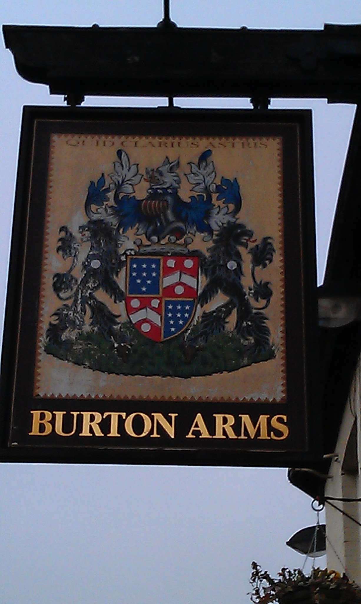
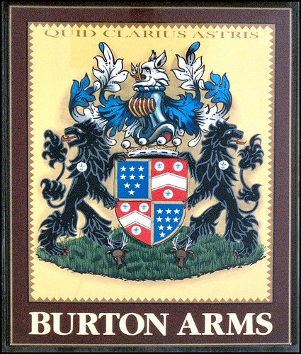

Posted to: The Google+ Heraldry Community
Posted by: Karl Wilcox
Created on: December 12 2012 at 22:54
This one looks quite straightforward, this is a pub called the "Burton Arms", so those must be the arms of Burton, right? Well, let's see…
Burke's General Armory
contains 64 entries for Burton
, but none of those seem to describe what we are seeing. Fox's Armorial Families
has only a handful, but again nothing that seems correct.
We have plenty of other clues however, before we start to decode the blazon we could simply try the motto at the top of the sign. Very quickly this brings us to the entry for Baillie (or its very many variant spellings). In fact we have the full coat of arms of Baillie here, including the supporters and Crest, but clearly it is quartered with some other arms.
These other arms appear to be Gules, a chevron argent between three plates, a full text search of the Burke's armory does not seem to locate anything relevant. We need to do a little bit more background research so let's try typing "Burton arms Lincoln" into Google. This brings up a Facebook page for the pub, I don't have a Facebook ID, but the public information includes a more detailed picture of the arms (see the gallery images).
From this picture we can see that the chevron is actually cotticed and that the plates are charged with a fleur-de-lys. We can now do a more directed text search, "chev. cot" gives 51 hits and the very first one is exactly what we want. This turns out to be the arms of Bass
, of Burton upon Trent, a name familiar to generations of British drinkers as being one of the country's major brewers.
So these are not the arms of Burton after all. There is however a road nearby called Burton Road, leading to the village of Burton-by-Lincoln. I think this then gives us the full story - a pub on the way from the city centre to the village of Burton is called the "Burton arms", and the Inn sign is the arms of the landlord, Mr Bailey, quartered with those of Bass, the brewer. Mission accomplished - arms identified!
( Extracts from Burke's _ General Armory_ follow )
BAYLY (Plas Newydd, Anglesey, bart. ; now represented in the male line, by the Marquess of Anglesey). Az. nine estoiles, three, three, two, and one, ar. Crest - A boar's head erased ppr. Motto-Quid clarius astria.
(P. 60, similar entries under BAILLIE, P. 40)
BASS (Rangemore Hall, co. Stafford, Bart., created 17 May, 1883. Sir Michael Arthur Bass, Bart, is eldest son of the late Michael Thomas Bass, Esq., of Rangemore, M.P. for Derby, the son of Michael Thomas Bass, of Burton-on-Trent, whose father, William Bass, b. in 1717, founded the family and bought, in 1777, the house and land in Burton-on-Trent which still, unaltered, forms part of the great Brewery there : he d. and was buried at Burton in 1787). Gu. on a chev. cottised arg. between three plates, each charged with a fleur-de-lis az., a demi lion ramp, couped of the first. Crest -A demi lion gu. resting the dexter paw on a plate charged, as in the arms, on the shoulder three annulets, two and one, arg. Motto-Basis virtutum constantia.
(Supplement, un-numbered page)

Pub Sign, West Parade, Lincoln

Burton Arms (from Google Streetview)

From Burton Arms Facebook Page